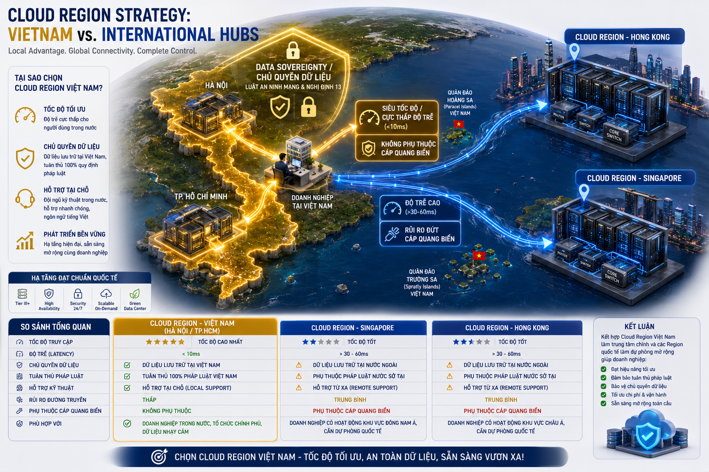
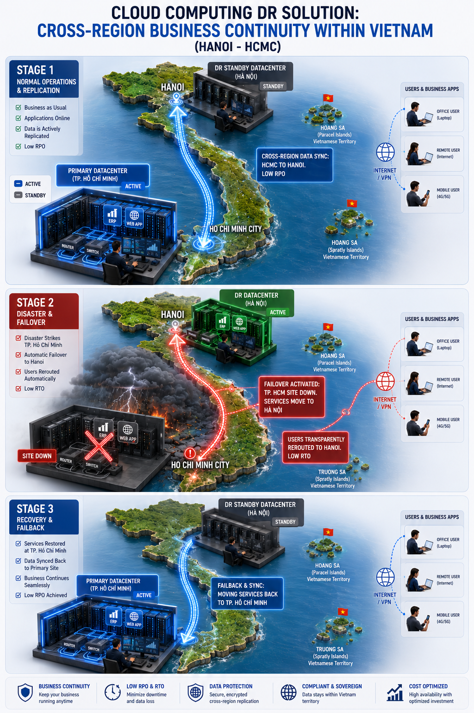
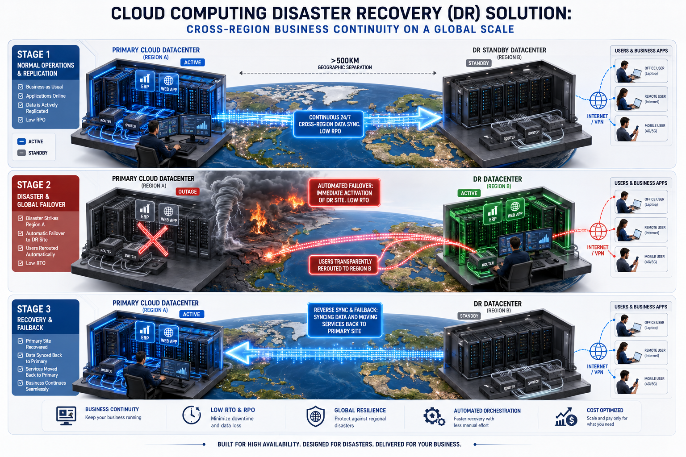
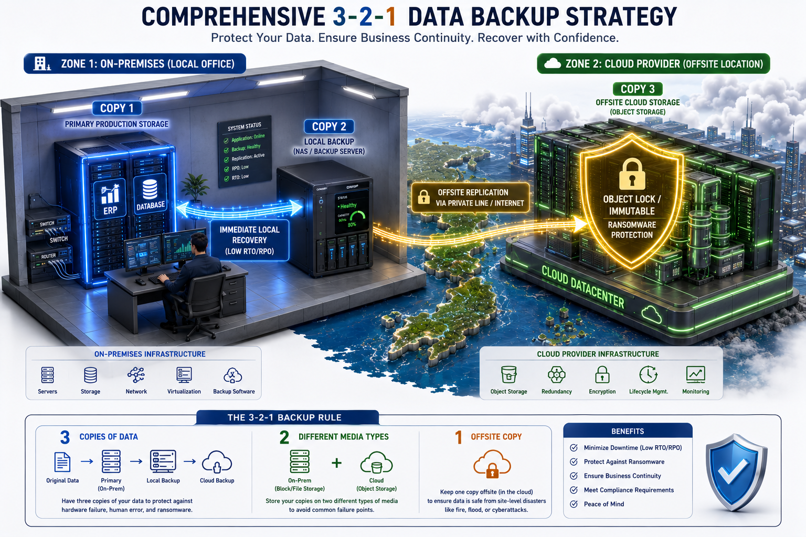
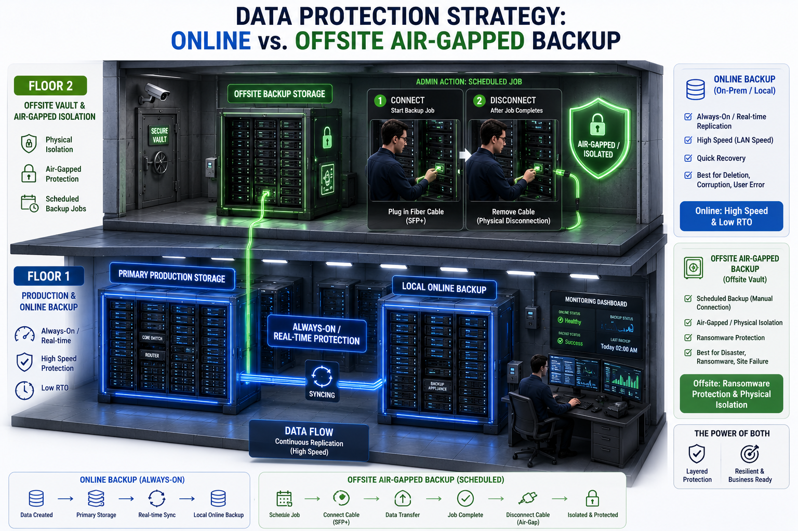
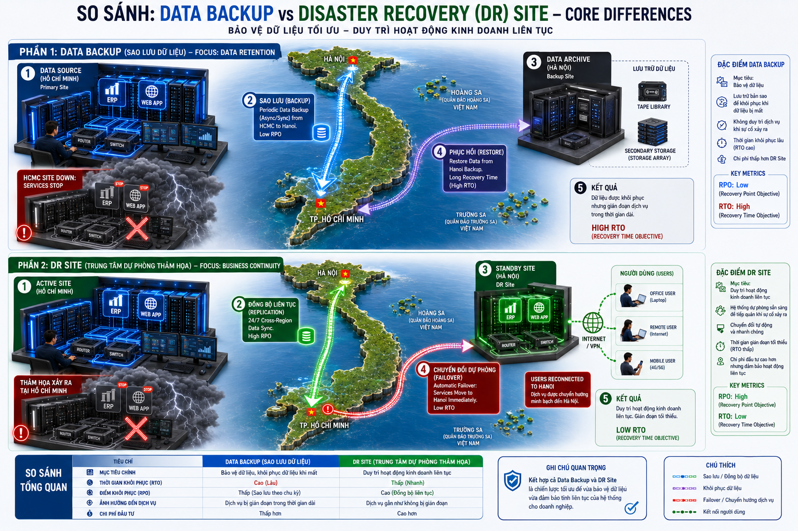

📌 Ý chính của module
Khách hàng thường dùng chung các từ “Cloud”, “DR”, “backup”, “site dự phòng”, “lưu dữ liệu nhiều nơi” như thể chúng giống nhau. Trong tư vấn hạ tầng, mỗi thuật ngữ giải quyết một bài toán khác nhau: nơi chạy workload, nơi dự phòng khi có sự cố, cách lưu bản sao dữ liệu, và khả năng khôi phục dịch vụ.
Dùng 6 thẻ này để Sales xác định nhanh đang nói về region, DR hay backup.
Cloud Region
Nơi provider đặt hạ tầng Cloud, có thể trải rộng nhiều quốc gia.
DR trong một quốc gia
Site dự phòng đặt ở địa điểm khác nhưng vẫn trong cùng quốc gia.
DR đa quốc gia
Site dự phòng nằm ở quốc gia khác để tăng khả năng phục hồi cấp khu vực.
Backup 3-2-1
Nguyên tắc giữ nhiều bản sao dữ liệu ở nhiều môi trường khác nhau.
Online & Offsite Backup
Bản sao dữ liệu truy cập qua mạng và/hoặc nằm ngoài site chính.
DR Site vs Backup
Backup khôi phục dữ liệu; DR site khôi phục dịch vụ/workload.

Region không đồng nghĩa hệ thống tự động chạy ở mọi quốc gia
Khái niệm
Cloud region là khu vực địa lý nơi cloud provider đặt hạ tầng Cloud. Một provider lớn có thể có nhiều region ở nhiều quốc gia khác nhau. Mỗi region thường bao gồm một hoặc nhiều data center/availability zone để phục vụ workload tại khu vực đó.
Sales cần hiểu
Cloud regional với multiple country không có nghĩa là workload của khách hàng tự động chạy ở tất cả quốc gia. Khách hàng cần chọn region triển khai, thiết kế replication, network, backup hoặc DR nếu muốn hệ thống hoạt động xuyên quốc gia.
Khi khách hàng quan tâm
- Muốn giảm độ trễ cho người dùng ở nhiều quốc gia.
- Có yêu cầu dữ liệu lưu trong một quốc gia/khu vực cụ thể.
- Muốn triển khai hệ thống gần khách hàng cuối.
- Cần thiết kế multi-region để tăng khả năng sẵn sàng.
Cloud provider có thể có nhiều region tại nhiều quốc gia, nhưng việc hệ thống của khách hàng có chạy hoặc dự phòng ở nhiều quốc gia hay không phụ thuộc vào thiết kế kiến trúc, replication, network và chính sách dữ liệu.

DR site không chỉ là nơi lưu backup
Khái niệm
DR site trong một quốc gia là môi trường dự phòng được đặt ở một địa điểm khác trong cùng quốc gia với site chính. Mục tiêu là khôi phục dịch vụ khi site chính gặp sự cố như mất điện, lỗi hạ tầng, sự cố data center hoặc lỗi vận hành nghiêm trọng.
Sales cần hiểu
DR site thường cần đủ hạ tầng, network, dữ liệu đồng bộ, quy trình chuyển đổi và kế hoạch kiểm thử để workload có thể chạy lại khi site chính gặp sự cố.
Khi khách hàng quan tâm
- Có hệ thống quan trọng cần đảm bảo uptime.
- Không muốn dữ liệu ra khỏi quốc gia.
- Cần tuân thủ quy định nội địa.
- Muốn có phương án khôi phục dịch vụ khi site chính lỗi.
DR site trong cùng quốc gia giúp khách hàng có điểm khôi phục dịch vụ khi site chính gặp sự cố, nhưng vẫn giữ dữ liệu và vận hành trong phạm vi quốc gia.

Tăng khả năng phục hồi, nhưng phải kiểm tra dữ liệu và kết nối
Khái niệm
DR site with multiple country là mô hình dự phòng thảm họa ở quốc gia khác. Site chính có thể nằm ở Việt Nam, còn DR site nằm ở Singapore, Nhật Bản, Hong Kong hoặc quốc gia khác tùy chiến lược và quy định dữ liệu.
Sales cần hiểu
DR đa quốc gia giúp tăng khả năng chống chịu khi sự cố ảnh hưởng diện rộng, nhưng kéo theo yêu cầu cao hơn về network, latency, data sovereignty, compliance, chi phí truyền dữ liệu và quy trình vận hành.
Khi khách hàng quan tâm
- Doanh nghiệp hoạt động đa quốc gia.
- Cần phục hồi khi một quốc gia/khu vực gặp sự cố lớn.
- Có người dùng hoặc chi nhánh ở nhiều nước.
- Cần business continuity ở cấp khu vực.
DR site ở nhiều quốc gia giúp tăng khả năng phục hồi ở cấp khu vực, nhưng cần đánh giá kỹ yêu cầu pháp lý, vị trí dữ liệu, độ trễ, chi phí kết nối và quy trình failover.

3-2-1 là nguyên tắc bảo vệ dữ liệu, không phải DR site
Khái niệm
Chiến lược backup 3-2-1 nghĩa là có ít nhất 3 bản dữ liệu, lưu trên 2 loại phương tiện hoặc môi trường khác nhau, và có 1 bản nằm offsite hoặc tách biệt khỏi hệ thống chính.
Cách hiểu đơn giản
- 3 bản dữ liệu: dữ liệu chính + ít nhất 2 bản sao.
- 2 loại môi trường lưu trữ: ví dụ storage nội bộ và object storage/cloud backup.
- 1 bản offsite: nằm ngoài site chính để tránh mất dữ liệu khi site chính gặp sự cố.
Backup 3-2-1 giúp giảm rủi ro mất dữ liệu bằng cách giữ nhiều bản sao ở nhiều môi trường khác nhau, trong đó có ít nhất một bản tách khỏi site chính.

Online không tự động an toàn, offsite không tự động khôi phục nhanh
Khái niệm
Online backup là bản sao dữ liệu có thể truy cập qua mạng và thường được cập nhật định kỳ hoặc gần thời gian thực. Offsite backup là bản sao dữ liệu được lưu ở một địa điểm khác với site chính, có thể là cloud storage, data center khác hoặc dịch vụ backup chuyên dụng.
Sales cần hiểu
Cần hỏi thêm về tần suất backup, thời gian giữ bản sao, mã hóa, khả năng restore, băng thông và quy trình kiểm thử khôi phục.
Khi khách hàng quan tâm
- Muốn bảo vệ dữ liệu khỏi lỗi người dùng, ransomware, lỗi hệ thống.
- Cần bản sao ngoài site chính.
- Cần khôi phục file, database, VM hoặc hệ thống sau sự cố.
- Muốn có chính sách retention theo ngày, tuần, tháng.
Online/offsite backup giúp khách hàng có bản sao dữ liệu ở ngoài site chính, nhưng cần thiết kế đúng retention, encryption, restore test và băng thông để đảm bảo khôi phục được khi cần.

Backup khôi phục dữ liệu, DR site khôi phục dịch vụ
DR site và data backup đều liên quan đến khôi phục sau sự cố, nhưng mục tiêu khác nhau. Backup tập trung vào khôi phục dữ liệu. DR site tập trung vào khôi phục khả năng chạy dịch vụ hoặc workload.
Backup trả lời câu hỏi “dữ liệu có còn không?”. DR site trả lời câu hỏi “dịch vụ có chạy lại được không?”. Một hệ thống quan trọng thường cần cả backup và DR, nhưng hai khái niệm này không thay thế hoàn toàn cho nhau.
Bảng này giúp Sales tránh nói “có backup là có DR” hoặc “có DR site là không cần backup”.
| Tiêu chí | Data Backup | DR Site |
|---|---|---|
| Mục tiêu chính | Khôi phục dữ liệu | Khôi phục dịch vụ/workload |
| Câu hỏi cần trả lời | Có lấy lại được dữ liệu không? | Hệ thống có chạy lại được ở đâu và trong bao lâu? |
| Thành phần chính | Bản sao dữ liệu, retention, encryption, restore | Hạ tầng dự phòng, dữ liệu đồng bộ, network, failover plan |
| Chỉ số quan trọng | Backup frequency, retention, restore time | RTO, RPO, failover time, DR test |
| Chi phí | Thường thấp hơn DR site | Thường cao hơn vì cần môi trường chạy dự phòng |
| Rủi ro nếu hiểu nhầm | Có backup nhưng khôi phục chậm hoặc thiếu dữ liệu | Có site dự phòng nhưng dữ liệu không đồng bộ hoặc failover không chạy |
Hai chỉ số này giúp Sales chuyển câu hỏi “anh/chị muốn an toàn đến mức nào?” thành yêu cầu có thể thiết kế được.
RTO - Recovery Time Objective
RTO là thời gian tối đa khách hàng chấp nhận hệ thống bị gián đoạn trước khi dịch vụ phải chạy lại.
RPO - Recovery Point Objective
RPO là lượng dữ liệu tối đa khách hàng chấp nhận mất tính theo thời gian.
RTO là khách hàng chịu downtime tối đa bao lâu. RPO là khách hàng chịu mất dữ liệu tối đa bao lâu. RTO càng ngắn và RPO càng nhỏ thì giải pháp DR/backup càng cần thiết kế kỹ hơn và chi phí thường cao hơn.
Sales cần phân biệt rõ Cloud region, DR site và backup trước khi tư vấn giải pháp. Cloud region là nơi triển khai hạ tầng Cloud. DR site là nơi giúp dịch vụ chạy lại khi site chính gặp sự cố. Backup là chiến lược giữ bản sao dữ liệu để khôi phục khi cần. Nói đúng ba lớp này giúp Sales tránh tư vấn sai kỳ vọng và mở discovery chính xác hơn.